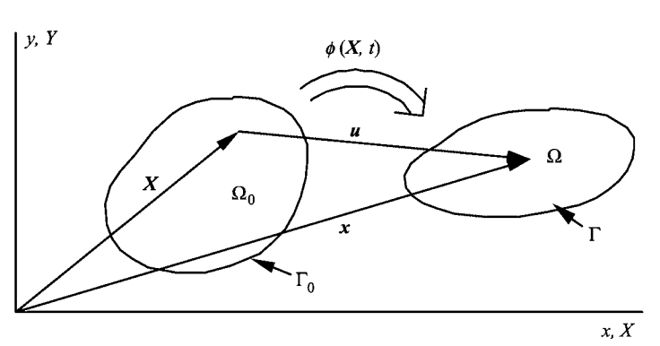

Definitions
Consider a body in an initial state at a time \(t=0\) , the domain of the
body in the initial state is denoted by \(\Omega_{0}\) and called the initial configuration. In describing the
motion of the body and deformation, we also need a configuration to which various equations
are referred; this is called the reference configuration. Unless we specify otherwise, the initial
configuration is used as the reference configuration. However, other configurations can also
be used as the reference configuration and we will do so in some derivations. The significance
of the reference configuration lies in the fact that motion is defined with respect to this
configuration.
In many cases, we will also need to specify a configuration which is considered to be an
undeformed configuration, which occupies domain \(\Omega_{0}\) . Unless specified otherwise, the
undeformed configuration is identical to the initial configuration.
The domain of the current configuration of the body is denoted by \(\Omega\) ; this will often also be
called the deformed configuration. The domain can be one-, two- or three-dimensional; \(\Omega\) then
refers to a line, an area, or a volume, respectively. The boundary of the domain is denoted by
\(\Gamma\) , and corresponds to the two end-points of a segment in one dimension, a curve in two
dimensions, and a surface in three dimensions. The developments which follow hold for a
model of any dimension from one to three. The dimension of a model is denoted by \(n_{SD}\) , where
‘SD’ denotes the number of space dimensions.

Undeformed (initial) and deformed (current) configurations of a body
\[\begin{split}J(X_{1},X_{2})=\cfrac{\partial (x_{1},x_{2})}{\partial (X_{1},X_{2})}=\begin{bmatrix}
\cfrac{\partial x_{1}}{\partial X_{1}}& \cfrac{\partial x_{1}}{\partial X_{2}}\\
\cfrac{\partial x_{2}}{\partial X_{1}}& \cfrac{\partial x_{2}}{\partial X_{2}}\\
\end{bmatrix}\end{split}\]
\[\begin{split}J(X,Y)=\cfrac{\partial (x,y)}{\partial (X,Y)}=\begin{bmatrix}
\cfrac{\partial x}{\partial X}& \cfrac{\partial x}{\partial Y}\\
\cfrac{\partial y}{\partial X}& \cfrac{\partial y}{\partial Y}\\
\end{bmatrix}\end{split}\]
The Jacobian determinant can be used to relate integrals in the current and reference configurations by
\[\int\limits_{\Omega}f(\mathbf{x},t)d\Omega=\int\limits_{\Omega_{0}}f(\boldsymbol{\phi}(\mathbf{X},t),t)\left | J(\mathbf{X}) \right | d\Omega_{0}\]
or in two dimensions
\[\int\limits_{\Omega}f(x,y,t)dxdy=\int\limits_{\Omega_{0}}F(X,Y,t)\left | J(X,Y) \right | dXdY\]
The material derivative of the Jacobian determinant is given by
\[\cfrac{\text{d}J}{\text{d}t}=J\text{div }\mathbf{v}=J\cfrac{\partial v_{i} }{\partial x_{i}}\]
Proof
\[\begin{split}J=
\begin{vmatrix}
\cfrac{\partial x_{1}}{\partial \xi_{1}} & \cfrac{\partial x_{1}}{\partial \xi_{2}} & \cfrac{\partial x_{1}}{\partial \xi_{3}} \\
\cfrac{\partial x_{2}}{\partial \xi_{1}} & \cfrac{\partial x_{2}}{\partial \xi_{2}} & \cfrac{\partial x_{2}}{\partial \xi_{3}} \\
\cfrac{\partial x_{3}}{\partial \xi_{1}} & \cfrac{\partial x_{3}}{\partial \xi_{2}} & \cfrac{\partial x_{3}}{\partial \xi_{3}}
\end{vmatrix}=
\begin{vmatrix}
\cfrac{\partial x_{1}}{\partial X_{1}} & \cfrac{\partial x_{1}}{\partial X_{2}} & \cfrac{\partial x_{1}}{\partial X_{3}} \\
\cfrac{\partial x_{2}}{\partial X_{1}} & \cfrac{\partial x_{2}}{\partial X_{2}} & \cfrac{\partial x_{2}}{\partial X_{3}} \\
\cfrac{\partial x_{3}}{\partial X_{1}} & \cfrac{\partial x_{3}}{\partial X_{2}} & \cfrac{\partial x_{3}}{\partial X_{3}}
\end{vmatrix}\end{split}\]
\[\cfrac{\text{d}}{\text{d}t}\left ( \cfrac{\partial{x_{i}}}{\partial{\xi_{j}}} \right )
=\cfrac{\partial}{\partial{\xi_{j}}}\cfrac{\text{d}{x_{i}}}{\text{d}t}
=\cfrac{\partial{v_{i}}}{\partial{\xi_{j}}}\]
\[\cfrac{\text{d}}{\text{d}t}\left ( \cfrac{\partial{x_{i}}}{\partial{X_{j}}} \right )
=\cfrac{\partial}{\partial{X_{j}}}\cfrac{\text{d}{x_{i}}}{\text{d}t}
=\cfrac{\partial{v_{i}}}{\partial{X_{j}}}\]
\[\cfrac{\partial v_{i} }{\partial X_{j}}
=\cfrac{\partial v_{i} }{\partial x_{1}}\cfrac{\partial x_{1} }{\partial X_{j}}
+\cfrac{\partial v_{i} }{\partial x_{2}}\cfrac{\partial x_{2} }{\partial X_{j}}
+\cfrac{\partial v_{i} }{\partial x_{3}}\cfrac{\partial x_{3} }{\partial X_{j}}\]
\[\cfrac{\text{d}J}{\text{d}t}=J_{1}+J_{2}+J_{3}\]
\[\begin{split}J_{1}=
\begin{vmatrix}
\cfrac{\text{d}}{\text{d}t}\left ( \cfrac{\partial x_{1}}{\partial \xi_{1}} \right )
& \cfrac{\text{d}}{\text{d}t}\left ( \cfrac{\partial x_{1}}{\partial \xi_{2}} \right )
& \cfrac{\text{d}}{\text{d}t}\left ( \cfrac{\partial x_{1}}{\partial \xi_{3}} \right )\\
\cfrac{\partial x_{2}}{\partial \xi_{1}} & \cfrac{\partial x_{2}}{\partial \xi_{2}} & \cfrac{\partial x_{2}}{\partial \xi_{3}} \\
\cfrac{\partial x_{3}}{\partial \xi_{1}} & \cfrac{\partial x_{3}}{\partial \xi_{2}} & \cfrac{\partial x_{3}}{\partial \xi_{3}}
\end{vmatrix}\end{split}\]
\[\begin{split}J_{2}=
\begin{vmatrix}
\cfrac{\partial x_{1} }{\partial \xi_{1}}& \cfrac{\partial x_{1} }{\partial \xi_{2}} & \cfrac{\partial x_{1} }{\partial \xi_{3}}\\
\cfrac{\text{d}}{\text{d}t}\left ( \cfrac{\partial x_{2}}{\partial \xi_{1}} \right)
& \cfrac{\text{d}}{\text{d}t}\left ( \cfrac{\partial x_{2}}{\partial \xi_{2}} \right)
& \cfrac{\text{d}}{\text{d}t}\left ( \cfrac{\partial x_{2}}{\partial \xi_{3}} \right) \\
\cfrac{\partial x_{3}}{\partial \xi_{1}} & \cfrac{\partial x_{3}}{\partial \xi_{2}} & \cfrac{\partial x_{3}}{\partial \xi_{3}}
\end{vmatrix}\end{split}\]
\[\begin{split}J_{3}=
\begin{vmatrix}
\cfrac{\partial x_{1} }{\partial \xi_{1}}& \cfrac{\partial x_{1} }{\partial \xi_{2}} & \cfrac{\partial x_{1} }{\partial \xi_{3}}\\
\cfrac{\partial x_{2}}{\partial \xi_{1}}& \cfrac{\partial x_{2}}{\partial \xi_{2}} & \cfrac{\partial x_{2}}{\partial \xi_{3}} \\
\cfrac{\text{d}}{\text{d}t}\left ( \cfrac{\partial x_{3}}{\partial \xi_{1}} \right)
& \cfrac{\text{d}}{\text{d}t}\left ( \cfrac{\partial x_{3}}{\partial \xi_{2}} \right)
& \cfrac{\text{d}}{\text{d}t}\left ( \cfrac{\partial x_{3}}{\partial \xi_{3}} \right)
\end{vmatrix}\end{split}\]
\[\cfrac{\text{d}}{\text{d}t}\left ( \cfrac{\partial{x_{i}}}{\partial{\xi_{j}}} \right )
=\cfrac{\partial v_{i} }{\partial \xi_{j}} = \cfrac{\partial v_{i} }{\partial x_{k}}\cfrac{\partial x_{k} }{\partial \xi_{j}}=
\cfrac{\partial v_{i} }{\partial x_{1}}\cfrac{\partial x_{1} }{\partial \xi_{j}}
+\cfrac{\partial v_{i} }{\partial x_{2}}\cfrac{\partial x_{2} }{\partial \xi_{j}}
+\cfrac{\partial v_{i} }{\partial x_{3}}\cfrac{\partial x_{3} }{\partial \xi_{j}}\]
\[\begin{split}\begin{array}{c}
\cfrac{\text{d}}{\text{d}t}\left ( \cfrac{\partial{x_{1}}}{\partial{\xi_{1}}} \right )
=\cfrac{\partial v_{1} }{\partial \xi_{1}} = \cfrac{\partial v_{1} }{\partial x_{k}}\cfrac{\partial x_{k} }{\partial \xi_{1}}=
\cfrac{\partial v_{1} }{\partial x_{1}}\cfrac{\partial x_{1} }{\partial \xi_{1}}
+\cfrac{\partial v_{1} }{\partial x_{2}}\cfrac{\partial x_{2} }{\partial \xi_{1}}
+\cfrac{\partial v_{1} }{\partial x_{3}}\cfrac{\partial x_{3} }{\partial \xi_{1}}\\
\cfrac{\text{d}}{\text{d}t}\left ( \cfrac{\partial{x_{1}}}{\partial{\xi_{2}}} \right )
=\cfrac{\partial v_{1} }{\partial \xi_{2}} = \cfrac{\partial v_{1} }{\partial x_{k}}\cfrac{\partial x_{k} }{\partial \xi_{2}}=
\cfrac{\partial v_{1} }{\partial x_{1}}\cfrac{\partial x_{1} }{\partial \xi_{2}}
+\cfrac{\partial v_{1} }{\partial x_{2}}\cfrac{\partial x_{2} }{\partial \xi_{2}}
+\cfrac{\partial v_{1} }{\partial x_{3}}\cfrac{\partial x_{3} }{\partial \xi_{2}}\\
\cfrac{\text{d}}{\text{d}t}\left ( \cfrac{\partial{x_{1}}}{\partial{\xi_{3}}} \right )
=\cfrac{\partial v_{1} }{\partial \xi_{3}} = \cfrac{\partial v_{1} }{\partial x_{k}}\cfrac{\partial x_{k} }{\partial \xi_{3}}=
\cfrac{\partial v_{1} }{\partial x_{1}}\cfrac{\partial x_{1} }{\partial \xi_{3}}
+\cfrac{\partial v_{1} }{\partial x_{2}}\cfrac{\partial x_{2} }{\partial \xi_{3}}
+\cfrac{\partial v_{1} }{\partial x_{3}}\cfrac{\partial x_{3} }{\partial \xi_{3}}\\
\end{array}\end{split}\]
\[\begin{split}J_{1}=
\begin{vmatrix}
\cfrac{\partial v_{1} }{\partial x_{1}}\cfrac{\partial x_{1} }{\partial \xi_{1}}
+\cfrac{\partial v_{1} }{\partial x_{2}}\cfrac{\partial x_{2} }{\partial \xi_{1}}
+\cfrac{\partial v_{1} }{\partial x_{3}}\cfrac{\partial x_{3} }{\partial \xi_{1}}
& \cfrac{\partial v_{1} }{\partial x_{1}}\cfrac{\partial x_{1} }{\partial \xi_{2}}
+\cfrac{\partial v_{1} }{\partial x_{2}}\cfrac{\partial x_{2} }{\partial \xi_{2}}
+\cfrac{\partial v_{1} }{\partial x_{3}}\cfrac{\partial x_{3} }{\partial \xi_{2}}
& \cfrac{\partial v_{1} }{\partial x_{1}}\cfrac{\partial x_{1} }{\partial \xi_{3}}
+\cfrac{\partial v_{1} }{\partial x_{2}}\cfrac{\partial x_{2} }{\partial \xi_{3}}
+\cfrac{\partial v_{1} }{\partial x_{3}}\cfrac{\partial x_{3} }{\partial \xi_{3}}\\
\cfrac{\partial x_{2}}{\partial \xi_{1}} & \cfrac{\partial x_{2}}{\partial \xi_{2}} & \cfrac{\partial x_{2}}{\partial \xi_{3}} \\
\cfrac{\partial x_{3}}{\partial \xi_{1}} & \cfrac{\partial x_{3}}{\partial \xi_{2}} & \cfrac{\partial x_{3}}{\partial \xi_{3}}
\end{vmatrix}\end{split}\]
\[\cfrac{\text{d}}{\text{d}t}\left ( \cfrac{\partial{x_{1}}}{\partial{\xi_{1}}} \right )
= \cfrac{\partial v_{1} }{\partial x_{1}}\cfrac{\partial x_{1} }{\partial \xi_{1}}
+\cfrac{\partial v_{1} }{\partial x_{2}}\cfrac{\partial x_{2} }{\partial \xi_{1}}
+\cfrac{\partial v_{1} }{\partial x_{3}}\cfrac{\partial x_{3} }{\partial \xi_{1}}
= \cfrac{\partial v_{1} }{\partial x_{1}}{J_{11}}
+\cfrac{\partial v_{1} }{\partial x_{2}}{J_{21}}
+\cfrac{\partial v_{1} }{\partial x_{3}}{J_{31}}\]
\[\cfrac{\text{d}}{\text{d}t}\left ( \cfrac{\partial{x_{1}}}{\partial{\xi_{2}}} \right )
=\cfrac{\partial v_{1} }{\partial x_{1}}\cfrac{\partial x_{1} }{\partial \xi_{2}}
+\cfrac{\partial v_{1} }{\partial x_{2}}\cfrac{\partial x_{2} }{\partial \xi_{2}}
+\cfrac{\partial v_{1} }{\partial x_{3}}\cfrac{\partial x_{3} }{\partial \xi_{2}}
= \cfrac{\partial v_{1} }{\partial x_{1}}{J_{12}}
+\cfrac{\partial v_{1} }{\partial x_{2}}{J_{22}}
+\cfrac{\partial v_{1} }{\partial x_{3}}{J_{32}}\]
\[\cfrac{\text{d}}{\text{d}t}\left ( \cfrac{\partial{x_{1}}}{\partial{\xi_{3}}} \right )
=\cfrac{\partial v_{1} }{\partial x_{1}}\cfrac{\partial x_{1} }{\partial \xi_{3}}
+\cfrac{\partial v_{1} }{\partial x_{2}}\cfrac{\partial x_{2} }{\partial \xi_{3}}
+\cfrac{\partial v_{1} }{\partial x_{3}}\cfrac{\partial x_{3} }{\partial \xi_{3}}
= \cfrac{\partial v_{1} }{\partial x_{1}}{J_{13}}
+\cfrac{\partial v_{1} }{\partial x_{2}}{J_{23}}
+\cfrac{\partial v_{1} }{\partial x_{3}}{J_{33}}\]
\[\begin{split}R_{1}=\begin{bmatrix}
\cfrac{\text{d}}{\text{d}t}\left ( \cfrac{\partial x_{1}}{\partial \xi_{1}} \right )
& \cfrac{\text{d}}{\text{d}t}\left ( \cfrac{\partial x_{1}}{\partial \xi_{2}} \right )
& \cfrac{\text{d}}{\text{d}t}\left ( \cfrac{\partial x_{1}}{\partial \xi_{3}} \right )\\
\end{bmatrix}\end{split}\]
\[\begin{split}R_{2}=\begin{bmatrix}
\cfrac{\partial x_{2}}{\partial \xi_{1}} & \cfrac{\partial x_{2}}{\partial \xi_{2}} & \cfrac{\partial x_{2}}{\partial \xi_{3}} \\
\end{bmatrix}\end{split}\]
\[\begin{split}R_{3}=\begin{bmatrix}
\cfrac{\partial x_{3}}{\partial \xi_{1}} & \cfrac{\partial x_{3}}{\partial \xi_{2}} & \cfrac{\partial x_{3}}{\partial \xi_{3}} \\
\end{bmatrix}\end{split}\]
\[R_{1}-R_{2}\times \cfrac{\partial v_{1} }{\partial x_{2}}-R_{3}\times\cfrac{\partial v_{1} }{\partial x_{3}}
=\cfrac{\partial v_{1} }{\partial x_{1}}\begin{bmatrix}
\cfrac{\partial x_{1}}{\partial \xi_{1}} & \cfrac{\partial x_{1}}{\partial \xi_{2}} & \cfrac{\partial x_{1}}{\partial \xi_{3}}
\end{bmatrix}\]
\[\begin{split}J_{1}=\cfrac{\partial v_{1} }{\partial x_{1}}
\begin{vmatrix}
\cfrac{\partial x_{1}}{\partial \xi_{1}}
& \cfrac{\partial x_{1}}{\partial \xi_{2}}
& \cfrac{\partial x_{1}}{\partial \xi_{3}} \\
\cfrac{\partial x_{2}}{\partial \xi_{1}} & \cfrac{\partial x_{2}}{\partial \xi_{2}} & \cfrac{\partial x_{2}}{\partial \xi_{3}} \\
\cfrac{\partial x_{3}}{\partial \xi_{1}} & \cfrac{\partial x_{3}}{\partial \xi_{2}} & \cfrac{\partial x_{3}}{\partial \xi_{3}}
\end{vmatrix}=\cfrac{\partial v_{1} }{\partial x_{1}}J\end{split}\]
in the same way
\[\begin{split}J_{2}=\cfrac{\partial v_{2} }{\partial x_{2}}
\begin{vmatrix}
\cfrac{\partial x_{1}}{\partial \xi_{1}}
& \cfrac{\partial x_{1}}{\partial \xi_{2}}
& \cfrac{\partial x_{1}}{\partial \xi_{3}} \\
\cfrac{\partial x_{2}}{\partial \xi_{1}} & \cfrac{\partial x_{2}}{\partial \xi_{2}} & \cfrac{\partial x_{2}}{\partial \xi_{3}} \\
\cfrac{\partial x_{3}}{\partial \xi_{1}} & \cfrac{\partial x_{3}}{\partial \xi_{2}} & \cfrac{\partial x_{3}}{\partial \xi_{3}}
\end{vmatrix}=\cfrac{\partial v_{2} }{\partial x_{2}}J\end{split}\]
\[\begin{split}J_{3}=\cfrac{\partial v_{3} }{\partial x_{3}}
\begin{vmatrix}
\cfrac{\partial x_{1}}{\partial \xi_{1}}
& \cfrac{\partial x_{1}}{\partial \xi_{2}}
& \cfrac{\partial x_{1}}{\partial \xi_{3}} \\
\cfrac{\partial x_{2}}{\partial \xi_{1}} & \cfrac{\partial x_{2}}{\partial \xi_{2}} & \cfrac{\partial x_{2}}{\partial \xi_{3}} \\
\cfrac{\partial x_{3}}{\partial \xi_{1}} & \cfrac{\partial x_{3}}{\partial \xi_{2}} & \cfrac{\partial x_{3}}{\partial \xi_{3}}
\end{vmatrix}=\cfrac{\partial v_{3} }{\partial x_{3}}J\end{split}\]
This makes the final value of the time-derivative of the Jacobian:
\[\cfrac{\text{d}J}{\text{d}t}=\cfrac{\text{d}(J_{1}+J_{2}+J_{3})}{\text{d}t}=\left(\cfrac{\partial v_{1} }{\partial x_{1}}+\cfrac{\partial v_{2} }{\partial x_{2}}+\cfrac{\partial v_{3} }{\partial x_{3}}\right)J\]
\[\cfrac{\text{d}J}{\text{d}t}=J ( \text{div } \mathbf{v})=J ( \nabla \cdot \mathbf{v})=J(\cfrac{\partial v_{k} }{\partial x_{k}})\]
Proof 2:
\[J=\epsilon_{ijk} \cfrac{\partial x_{i} }{\partial \xi_{1}}\cfrac{\partial x_{j} }{\partial \xi_{2}}\cfrac{\partial x_{k} }{\partial \xi_{3}}\]
\[\begin{split}J= \begin{vmatrix}
\cfrac{\partial x_{1}}{\partial \xi_{1}}
& \cfrac{\partial x_{1}}{\partial \xi_{2}}
& \cfrac{\partial x_{1}}{\partial \xi_{3}} \\
\cfrac{\partial x_{2}}{\partial \xi_{1}} & \cfrac{\partial x_{2}}{\partial \xi_{2}} & \cfrac{\partial x_{2}}{\partial \xi_{3}} \\
\cfrac{\partial x_{3}}{\partial \xi_{1}} & \cfrac{\partial x_{3}}{\partial \xi_{2}} & \cfrac{\partial x_{3}}{\partial \xi_{3}}
\end{vmatrix}
=\epsilon_{ijk} \cfrac{\partial x_{1} }{\partial \xi_{i}}\cfrac{\partial x_{2} }{\partial \xi_{j}}\cfrac{\partial x_{3} }{\partial \xi_{k}}\end{split}\]
\[\begin{split}0= \begin{vmatrix}
\cfrac{\partial x_{2}}{\partial \xi_{1}}
& \cfrac{\partial x_{2}}{\partial \xi_{2}}
& \cfrac{\partial x_{2}}{\partial \xi_{3}} \\
\cfrac{\partial x_{2}}{\partial \xi_{1}} & \cfrac{\partial x_{2}}{\partial \xi_{2}} & \cfrac{\partial x_{2}}{\partial \xi_{3}} \\
\cfrac{\partial x_{3}}{\partial \xi_{1}} & \cfrac{\partial x_{3}}{\partial \xi_{2}} & \cfrac{\partial x_{3}}{\partial \xi_{3}}
\end{vmatrix}
=\epsilon_{ijk} \cfrac{\partial x_{2} }{\partial \xi_{i}}\cfrac{\partial x_{2} }{\partial \xi_{j}}\cfrac{\partial x_{3} }{\partial \xi_{k}}\end{split}\]
where \(\epsilon _{ijk}\) is the Levi-Civita symbol(wikipedia:Levi-Civita symbol )
From the compact form of the Jacobian, the time derivative can be written:
\[\cfrac{\text{d}J}{\text{d}t}=\cfrac{\text{d}}{\text{d}t}\left( \epsilon_{ijk} \cfrac{\partial x_{1} }{\partial \xi_{i}}\cfrac{\partial x_{2} }{\partial \xi_{j}}\cfrac{\partial x_{3} }{\partial \xi_{k}} \right)\]
This can be expanded as:
\[\cfrac{\text{d}J}{\text{d}t}
=\epsilon_{ijk} \left[\cfrac{\text{d}}{\text{d}t}\left(\cfrac{\partial x_{1} }{\partial \xi_{i}}\right)\right]\cfrac{\partial x_{2} }{\partial \xi_{j}}\cfrac{\partial x_{3} }{\partial \xi_{k}}
+\epsilon_{ijk} \cfrac{\partial x_{1} }{\partial \xi_{i}}\left[\cfrac{\text{d}}{\text{d}t}\left(\cfrac{\partial x_{2} }{\partial \xi_{j}}\right)\right]\cfrac{\partial x_{3} }{\partial \xi_{k}}
+\epsilon_{ijk} \cfrac{\partial x_{1} }{\partial \xi_{i}}\cfrac{\partial x_{2} }{\partial \xi_{j}}\left[\cfrac{\text{d}}{\text{d}t}\left(\cfrac{\partial x_{3} }{\partial \xi_{k}}\right)\right]\]
\[\cfrac{\text{d}}{\text{d}t}\left ( \cfrac{\partial{x_{i}}}{\partial{\xi_{j}}} \right )
=\cfrac{\partial}{\partial{\xi_{j}}}\cfrac{\text{d}{x_{i}}}{\text{d}t}
=\cfrac{\partial{v_{i}}}{\partial{\xi_{j}}}\]
\[\cfrac{\text{d}J}{\text{d}t}
= \epsilon_{ijk} \cfrac{\partial v_{1} }{\partial \xi_{i}}\cfrac{\partial x_{2} }{\partial \xi_{j}}\cfrac{\partial x_{3} }{\partial \xi_{k}}
+ \epsilon_{ijk} \cfrac{\partial x_{1} }{\partial \xi_{i}}\cfrac{\partial v_{2} }{\partial \xi_{j}}\cfrac{\partial x_{3} }{\partial \xi_{k}}
+ \epsilon_{ijk} \cfrac{\partial x_{1} }{\partial \xi_{i}}\cfrac{\partial x_{2} }{\partial \xi_{j}}\cfrac{\partial v_{3} }{\partial \xi_{k}}\]
and the term \(\cfrac {\partial v_{i}}{\partial \xi_{j}}\) can be expanded as
\[\cfrac {\partial v_{i}}{\partial \xi_{j}}=\cfrac {\partial v_{i}}{\partial x_{m}}\cfrac {\partial x_{m}}{\partial \xi_{j}}\]
which makes the time derivative of the Jacobian:
\[\cfrac{\text{d}J}{\text{d}t}
= \epsilon_{ijk} \cfrac {\partial v_{1}}{\partial x_{m}}\cfrac {\partial x_{m}}{\partial \xi_{i}}\cfrac{\partial x_{2} }{\partial \xi_{j}}\cfrac{\partial x_{3} }{\partial \xi_{k}}
+ \epsilon_{ijk} \cfrac{\partial x_{1} }{\partial \xi_{i}}\cfrac {\partial v_{2}}{\partial x_{m}}\cfrac {\partial x_{m}}{\partial \xi_{j}}\cfrac{\partial x_{3} }{\partial \xi_{k}}
+ \epsilon_{ijk} \cfrac{\partial x_{1} }{\partial \xi_{i}}\cfrac{\partial x_{2} }{\partial \xi_{j}}\cfrac {\partial v_{3}}{\partial x_{m}}\cfrac {\partial x_{m}}{\partial \xi_{k}}\]
\[\begin{split}\begin{array}{c}
J_{1} = \epsilon_{ijk} \cfrac {\partial v_{1}}{\partial x_{m}}\cfrac {\partial x_{m}}{\partial \xi_{i}}\cfrac{\partial x_{2} }{\partial \xi_{j}}\cfrac{\partial x_{3} }{\partial \xi_{k}}\\
J_{2} = \epsilon_{ijk} \cfrac{\partial x_{1} }{\partial \xi_{i}}\cfrac {\partial v_{2}}{\partial x_{m}}\cfrac {\partial x_{m}}{\partial \xi_{j}}\cfrac{\partial x_{3} }{\partial \xi_{k}}\\
J_{3} = \epsilon_{ijk} \cfrac{\partial x_{1} }{\partial \xi_{i}}\cfrac{\partial x_{2} }{\partial \xi_{j}}\cfrac {\partial v_{3}}{\partial x_{m}}\cfrac {\partial x_{m}}{\partial \xi_{k}}\\
\end{array}\end{split}\]
\[\cfrac{\text{d}J}{\text{d}t}=dJ_{1} + dJ_{2} + dJ_{3}\]
The first term, expanded all items, is:
\[\begin{split}\begin{align}
dJ_{1} & = \epsilon_{ijk} \cfrac {\partial v_{1}}{\partial x_{m}}\cfrac {\partial x_{m}}{\partial \xi_{i}}\cfrac{\partial x_{2} }{\partial \xi_{j}}\cfrac{\partial x_{3} }{\partial \xi_{k}}\\
& = \epsilon_{ijk} \cfrac {\partial v_{1}}{\partial x_{1}}\cfrac {\partial x_{1}}{\partial \xi_{i}}\cfrac{\partial x_{2} }{\partial \xi_{j}}\cfrac{\partial x_{3} }{\partial \xi_{k}}
+ \epsilon_{ijk} \cfrac {\partial v_{1}}{\partial x_{2}}\cfrac {\partial x_{2}}{\partial \xi_{i}}\cfrac{\partial x_{2} }{\partial \xi_{j}}\cfrac{\partial x_{3} }{\partial \xi_{k}}
+ \epsilon_{ijk} \cfrac {\partial v_{1}}{\partial x_{3}}\cfrac {\partial x_{3}}{\partial \xi_{i}}\cfrac{\partial x_{2} }{\partial \xi_{j}}\cfrac{\partial x_{3} }{\partial \xi_{k}}\\
& = \cfrac {\partial v_{1}}{\partial x_{1}}\epsilon_{ijk} \cfrac {\partial x_{1}}{\partial \xi_{i}}\cfrac{\partial x_{2} }{\partial \xi_{j}}\cfrac{\partial x_{3} }{\partial \xi_{k}}
+ \cfrac {\partial v_{1}}{\partial x_{2}}\epsilon_{ijk} \cfrac {\partial x_{2}}{\partial \xi_{i}}\cfrac{\partial x_{2} }{\partial \xi_{j}}\cfrac{\partial x_{3} }{\partial \xi_{k}}
+ \cfrac {\partial v_{1}}{\partial x_{3}}\epsilon_{ijk} \cfrac {\partial x_{3}}{\partial \xi_{i}}\cfrac{\partial x_{2} }{\partial \xi_{j}}\cfrac{\partial x_{3} }{\partial \xi_{k}}\\
\end{align}\end{split}\]
\[\begin{split}J= \begin{vmatrix}
\cfrac{\partial x_{1}}{\partial \xi_{1}}
& \cfrac{\partial x_{1}}{\partial \xi_{2}}
& \cfrac{\partial x_{1}}{\partial \xi_{3}} \\
\cfrac{\partial x_{2}}{\partial \xi_{1}} & \cfrac{\partial x_{2}}{\partial \xi_{2}} & \cfrac{\partial x_{2}}{\partial \xi_{3}} \\
\cfrac{\partial x_{3}}{\partial \xi_{1}} & \cfrac{\partial x_{3}}{\partial \xi_{2}} & \cfrac{\partial x_{3}}{\partial \xi_{3}}
\end{vmatrix}
=\epsilon_{ijk} \cfrac{\partial x_{1} }{\partial \xi_{i}}\cfrac{\partial x_{2} }{\partial \xi_{j}}\cfrac{\partial x_{3} }{\partial \xi_{k}}\end{split}\]
\[\begin{split}0= \begin{vmatrix}
\cfrac{\partial x_{2}}{\partial \xi_{1}}
& \cfrac{\partial x_{2}}{\partial \xi_{2}}
& \cfrac{\partial x_{2}}{\partial \xi_{3}} \\
\cfrac{\partial x_{2}}{\partial \xi_{1}} & \cfrac{\partial x_{2}}{\partial \xi_{2}} & \cfrac{\partial x_{2}}{\partial \xi_{3}} \\
\cfrac{\partial x_{3}}{\partial \xi_{1}} & \cfrac{\partial x_{3}}{\partial \xi_{2}} & \cfrac{\partial x_{3}}{\partial \xi_{3}}
\end{vmatrix}
=\epsilon_{ijk} \cfrac{\partial x_{2} }{\partial \xi_{i}}\cfrac{\partial x_{2} }{\partial \xi_{j}}\cfrac{\partial x_{3} }{\partial \xi_{k}}\end{split}\]
\[\begin{split}0= \begin{vmatrix}
\cfrac{\partial x_{3}}{\partial \xi_{1}}
& \cfrac{\partial x_{3}}{\partial \xi_{2}}
& \cfrac{\partial x_{3}}{\partial \xi_{3}} \\
\cfrac{\partial x_{2}}{\partial \xi_{1}} & \cfrac{\partial x_{2}}{\partial \xi_{2}} & \cfrac{\partial x_{2}}{\partial \xi_{3}} \\
\cfrac{\partial x_{3}}{\partial \xi_{1}} & \cfrac{\partial x_{3}}{\partial \xi_{2}} & \cfrac{\partial x_{3}}{\partial \xi_{3}}
\end{vmatrix}
=\epsilon_{ijk} \cfrac{\partial x_{3} }{\partial \xi_{i}}\cfrac{\partial x_{2} }{\partial \xi_{j}}\cfrac{\partial x_{3} }{\partial \xi_{k}}\end{split}\]
\[dJ_{1}= \cfrac {\partial v_{1}}{\partial x_{1}}\epsilon_{ijk} \cfrac {\partial x_{1}}{\partial \xi_{i}}\cfrac{\partial x_{2} }{\partial \xi_{j}}\cfrac{\partial x_{3} }{\partial \xi_{k}}=\cfrac {\partial v_{1}}{\partial x_{1}}J\]
Next, the second and third terms in the expression can be treated the same way:
\[dJ_{2}= \cfrac {\partial v_{2}}{\partial x_{2}}\epsilon_{ijk} \cfrac {\partial x_{1}}{\partial \xi_{i}}\cfrac{\partial x_{2} }{\partial \xi_{j}}\cfrac{\partial x_{3} }{\partial \xi_{k}}=\cfrac {\partial v_{2}}{\partial x_{2}}J\]
\[dJ_{3}= \cfrac {\partial v_{3}}{\partial x_{3}}\epsilon_{ijk} \cfrac {\partial x_{1}}{\partial \xi_{i}}\cfrac{\partial x_{2} }{\partial \xi_{j}}\cfrac{\partial x_{3} }{\partial \xi_{k}}=\cfrac {\partial v_{3}}{\partial x_{3}}J\]
\[\cfrac{\text{d}J}{\text{d}t}=dJ_{1}+dJ_{2}+dJ_{3}=\left(\cfrac{\partial v_{1} }{\partial x_{1}}+\cfrac{\partial v_{2} }{\partial x_{2}}+\cfrac{\partial v_{3} }{\partial x_{3}}\right)J\]
\[\cfrac{\text{d}J}{\text{d}t}=J ( \text{div } \mathbf{v})=J ( \nabla \cdot \mathbf{v})=J(\cfrac{\partial v_{k} }{\partial x_{k}})\]
{kind=link}